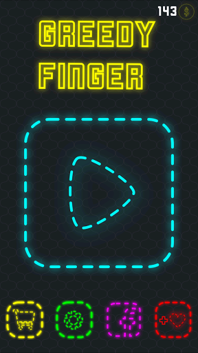
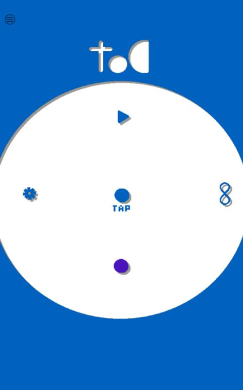

Alejandro Martinez Rivero
TSU en Technologie de l'information
Programmeur junior avec plus de 4 ans d'expérience dans le développement de software.
Bonjour
EXPÉRIENCE PROFESSIONNELLE
Entraineur
Olympiade mexicaine de l'informatique
Tâches
Apprendre la programmation structurée aux étudiants du lycée a fin de calculer une solution à des problèmes mathématiques complexes
Développeur
Naby
application mobile pour embaucher des nounous
Tâches
Programmeur front et backend de l'application mobile pour Android
Développeur
posfm (Point de vente)
Site de point de vente pour petites entreprises
Tâches
optimiser les processus de consommation de données
EDUCATION
LP - Systèmes Mobiles et Interface Nomade
TSU en technologies de l'information et de la communication
LANGAGES / TECHNOLOGIES

 Javascript
Javascript


PROJETS PERSONELS
Greedy finguer (jeu Android)(07/2016 – 02/2017)
"greedy Finguer" tous les processus pour la création complète d'une application, programmation, level design, musique, art, publicité et aspects légaux impliqués dans la publication du jeu.
Tod (jeu Android)(05/2015 – 01/2016)
Dans le développement de tod j'ai développé tous les processus pour la création complète d'une application, programmation, level design, musique, art, publicité et aspects légaux impliqués dans la publication du jeu
Vitae (01/2015 – 05/2015)
Programmeur front et backend de l'application mobile pour Android qui permet aux enfants handicapés de communiquer au moyen d'un clavier intelligent
COMPÉTENCES
RÉUSSITES
Médaille du bronze au niveau national à l’olympiade mexicaine de l'informatique en 2015
Deux médailles d'argent au niveau de l'état à l'Olympiade informatique mexicaine en 2014 et 2015